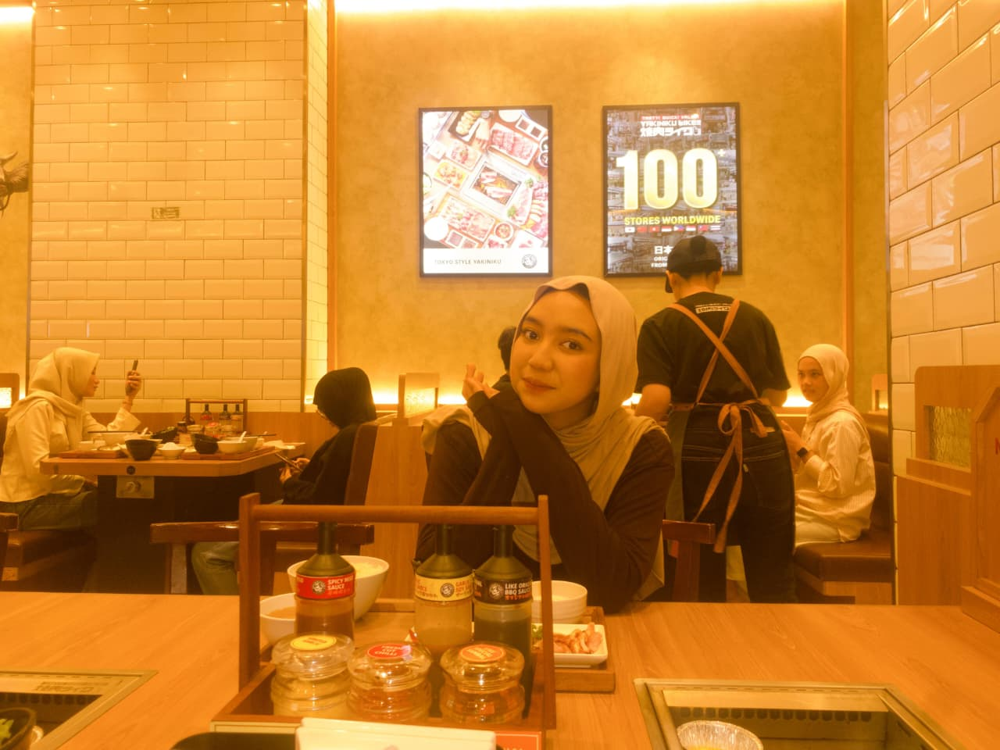
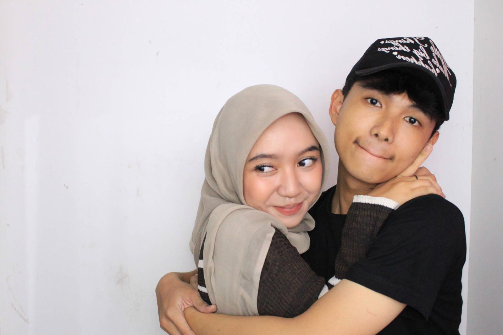
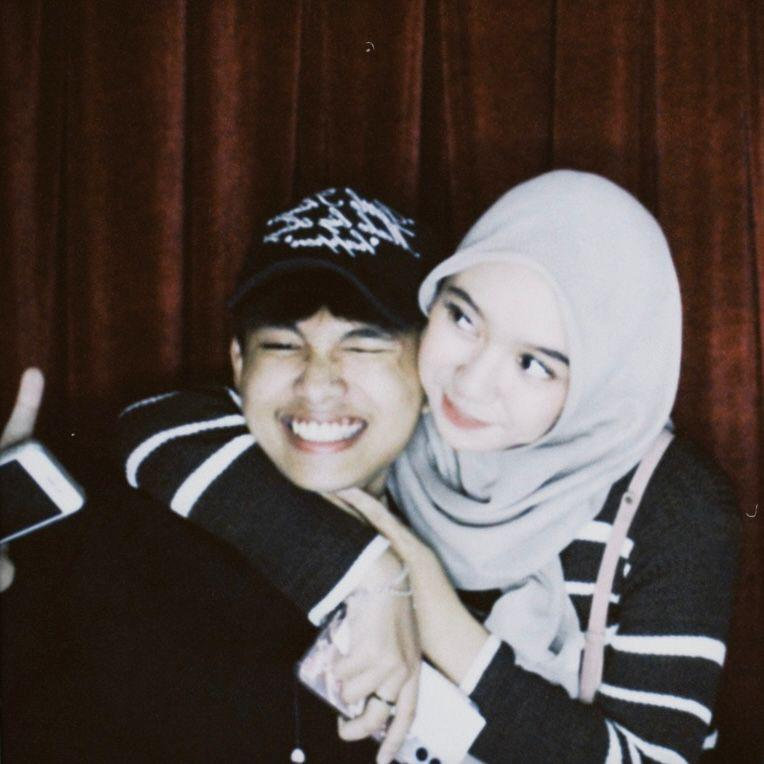
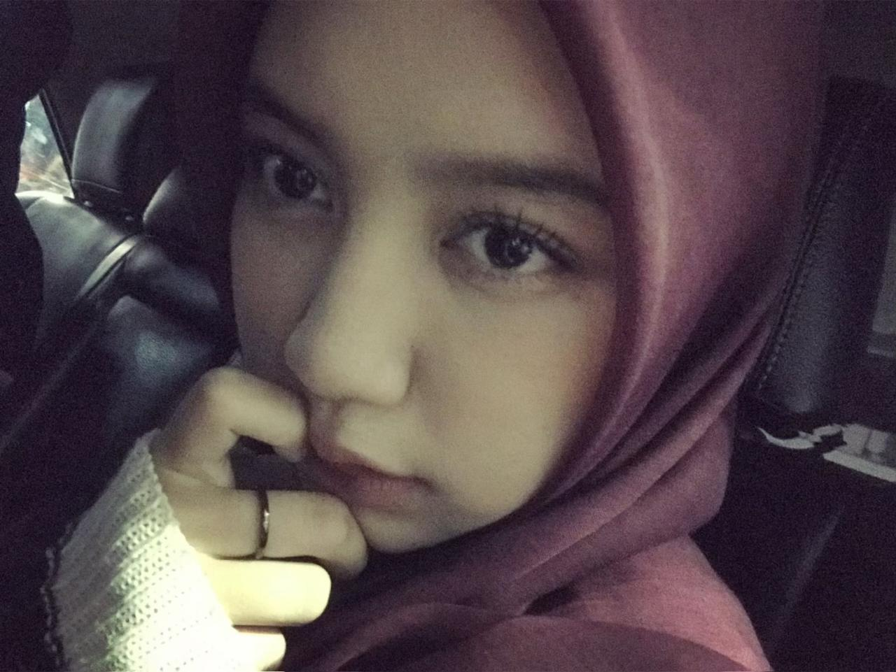

Website ini dikunci dan baru bisa dibuka pada tanggal 17 Oktober 2026. Sabar ya sayangkuuu! ❤️

Selamat ulang tahun yang ke-20 sayangkuuu! Semoga hari ini dan seterusnya penuh kebahagiaan. Tiup lilinnya dulu yuk!
(Klik lilin untuk meniup)

Terima kasih sudah selalu nemenin aku dan bikin hari-hari aku jadi lebih berwarna. Setiap momen sama kamu itu berharga banget.

Di umur kamu yang sekarang, aku berdoa semoga semua hal baik selalu datang ke hidup kamu. Semoga kamu selalu dikasih kesehatan, kebahagiaan, hati yang tenang, dan kekuatan buat ngelewatin setiap hal yang mungkin nggak selalu mudah buat kamu. Semoga semua yang kamu usahain selama ini bisa membuahkan hasil, semua mimpi yang kamu punya satu per satu bisa terwujud, dan kamu selalu dikelilingi sama orang-orang yang tulus sayang sama kamu.
Aku juga berharap kamu bisa terus tumbuh jadi diri kamu sendiri, bisa bangga sama setiap proses yang udah kamu lewatin, dan nggak terlalu keras sama diri kamu sendiri ketika keadaan nggak berjalan sesuai keinginan kamu. Kalau suatu hari kamu capek, semoga kamu selalu punya alasan buat istirahat sebentar, nenangin diri, dan kembali melangkah dengan hati yang lebih kuat.
Untuk hubungan kita, aku berharap kita bisa terus belajar jadi lebih baik buat satu sama lain. Semoga kita bisa lebih saling memahami, lebih sabar, lebih terbuka, dan bisa menghadapi masalah tanpa harus saling menyakiti. Aku tahu kita nggak selalu sempurna dan masih banyak hal yang perlu kita pelajari, tapi aku berharap kita selalu punya kemauan buat memperbaiki diri dan menjaga apa yang udah kita bangun bersama.
Aku juga berdoa semoga jarak yang sekarang ada di antara kita nggak mengurangi rasa sayang dan usaha kita buat satu sama lain. Semoga selalu ada waktu buat kita berbagi cerita, ketawa bareng, saling mendengarkan, dan menciptakan banyak kenangan baik meskipun kita belum bisa selalu berada di tempat yang sama.
Dan yang paling aku harapin, semoga kamu selalu punya banyak alasan buat bahagia, bukan cuma hari ini, tapi juga di hari-hari berikutnya. Semoga hidup kamu dipenuhi hal-hal yang bikin kamu bersyukur, semoga langkah kamu selalu dimudahkan, dan semoga apa pun yang sedang kamu perjuangkan membawa kamu ke tempat yang selama ini kamu impikan.
Happy birthday, sayang. Semoga di umur yang baru ini, kamu bisa menemukan lebih banyak kebahagiaan, ketenangan, dan hal-hal baik yang pantas kamu dapatkan. Terima kasih udah hadir di hidup aku dan jadi bagian dari cerita aku sampai hari ini. Aku berharap kamu selalu bahagia, bisa meraih semua yang kamu impikan, dan semoga aku masih punya kesempatan buat menemani kamu melewati banyak ulang tahun berikutnya. ❤️

Ada surat khusus yang aku tulis buat kamu. Klik tombol di bawah buat baca ya!
hai, sayang.
kalau kamu lagi baca surat ini, berarti ada satu hal yang pengen banget aku sampaikan ke kamu, sesuatu yang mungkin nggak selalu bisa aku ungkapin secara langsung.
pertama-tama, makasih ya udah hadir di hidup aku. makasih karena tanpa kamu sadari, kamu udah jadi salah satu alasan kenapa hari-hari aku terasa lebih berwarna. makasih buat setiap cerita, tawa, perhatian, dan hal-hal kecil yang mungkin buat kamu biasa aja, tapi berarti banyak buat aku.
aku tahu aku bukan pasangan yang sempurna. aku masih punya banyak kekurangan, masih sering salah dalam bersikap, dan masih harus banyak belajar buat jadi pasangan yang lebih baik. aku juga sadar ada hal-hal yang pernah aku lakuin yang bikin kamu kecewa. untuk itu, aku benar-benar minta maaf, ya, sayang. aku nggak bisa mengubah apa yang udah terjadi, tapi aku pengen terus belajar supaya ke depannya aku bisa memperlakukan kamu dengan lebih baik.
kalau suatu hari kamu ngerasa capek, aku harap kamu ingat kalau kamu nggak harus selalu terlihat kuat. kamu boleh istirahat, boleh cerita, boleh sedih, dan boleh jadi diri kamu sendiri. aku berharap dunia selalu punya cara buat memperlakukan kamu dengan baik, karena kamu juga pantas mendapatkan kebahagiaan dan ketenangan.
aku tahu hubungan kita nggak selalu mudah, apalagi dengan jarak yang kadang bikin kita cuma bisa saling menatap lewat layar. ada saatnya aku kangen kamu, pengen cerita langsung, pengen ketemu, atau sekadar menghabiskan waktu bareng tanpa harus mikirin jarak. tapi di tengah semua itu, aku berharap kita tetap bisa saling memahami dan terus belajar menjaga hubungan ini.
aku nggak bisa menjanjikan kalau ke depannya semuanya akan selalu berjalan sesuai keinginan kita. tapi aku ingin terus berusaha, bukan cuma lewat kata-kata manis, melainkan juga lewat sikap, waktu, perhatian, dan cara aku memperlakukan kamu setiap harinya.
di hari ulang tahun kamu ini, aku nggak cuma berharap kamu bahagia hari ini. aku berharap kamu bahagia di banyak hari setelahnya, berhasil meraih mimpi-mimpi kamu, bangga sama diri kamu sendiri, dan selalu punya alasan buat tersenyum.
dan kalau nanti kamu melihat kembali surat ini di waktu yang berbeda, aku harap kamu bisa mengingat bahwa di hari ulang tahunmu ini, ada seseorang yang benar-benar berharap hal-hal baik datang ke hidup kamu.
happy birthday, my favorite person.
semoga umur baru ini membawa banyak kebahagiaan, kesempatan, dan cerita indah buat kamu. terima kasih udah menjadi bagian dari hidup aku. semoga kita masih punya banyak kesempatan buat tumbuh bersama, belajar dari kesalahan, dan menciptakan kenangan yang suatu hari nanti bisa kita ceritakan sambil tersenyum.
i hope life will always be kind to you, and i hope you never forget how much you deserve to be happy.